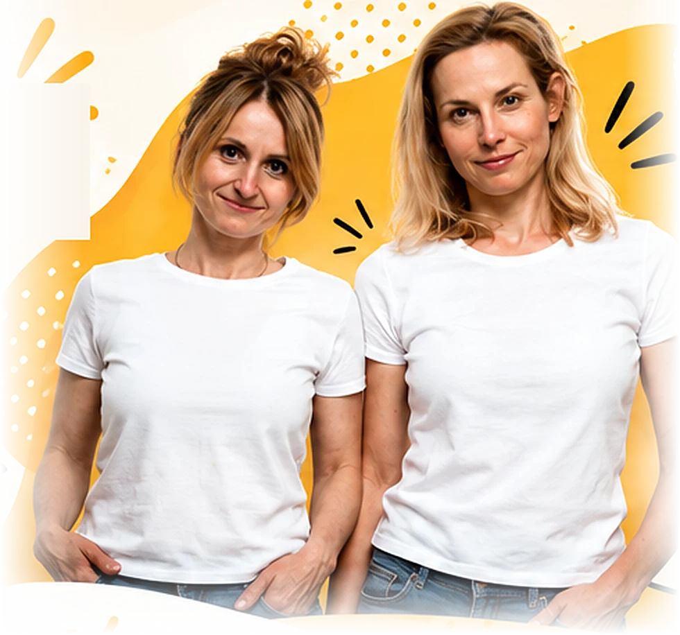

1
Tworzenie materiałów dydaktycznych z wykorzystaniem narzędzi AI
Jak korzystać z AI przy projektowaniu lekcji, ćwiczeń, tekstów, zadań komunikacyjnych i materiałów dopasowanych do poziomu grupy.
Kuchnia Metodyczna to nie tylko podcast. Prowadzimy również autorskie szkolenia dla szkół, szkół językowych, uczelni, zespołów lektorskich, ośrodków doskonalenia nauczycieli oraz innych instytucji edukacyjnych.

Jak korzystać z AI przy projektowaniu lekcji, ćwiczeń, tekstów, zadań komunikacyjnych i materiałów dopasowanych do poziomu grupy.
Jak projektować zadania, które uczą nie tylko języka, ale też analizy informacji, argumentowania, interpretowania i zadawania dobrych pytań.
Jak rozwijać kreatywność uczniów bez chaosu, infantylizacji i aktywności robionych „dla ozdoby”.
Jak przygotowywać i prowadzić prezentacje edukacyjne, szkoleniowe i konferencyjne, które są jasne, angażujące i dobrze zapamiętywane.
Praktyczne techniki rozwijania mówienia, budowania bezpieczeństwa komunikacyjnego i angażowania uczniów w rozmowę.
Jak planować lekcje, różnicować zadania i organizować pracę w grupach o nierównym poziomie zaawansowania.
Jak odzyskać kontrolę nad przygotowaniem zajęć, materiałami, poprawianiem prac i własną energią zawodową.
Jak tworzyć angażujące aktywności językowe oparte na fabule, zagadkach, współpracy i rozwiązywaniu problemów.
Szkolenie przygotowane na podstawie wybranego odcinka podcastu i dostosowane do potrzeb konkretnego zespołu.